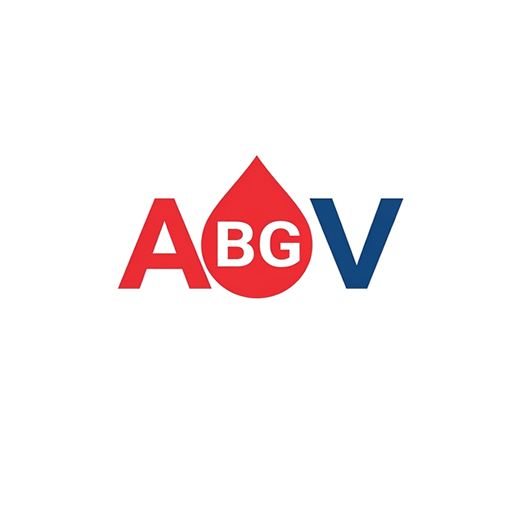

تحلیل گازهای خونی (ABG) — Blood Gas Expert
تفسیر هوشمند گاز خون شریانی و وریدی و اختلالات اسید و باز
دانلود از کافه بازاردرباره اپلیکیشن تحلیل گازهای خونی
Blood Gas Expert یک ابزار تخصصی برای تحلیل و تفسیر آزمایشهای گاز خون (شریانی و وریدی) است. این برنامه به پرستاران و پزشکان بخشهای ویژه و اورژانس کمک میکند تا اختلالات اسید و باز را سریع و دقیق شناسایی و تفسیر کنند.
امکانات کلیدی
- تحلیل گاز خون شریانی (ABG) و وریدی (VBG)
- تفسیر کامل اختلالات اسید و باز
- تشخیص اسیدوز و آلکالوز تنفسی و متابولیک
- مناسب بخشهای ویژه (ICU) و اورژانس
- نتایج سریع و دقیق
- رابط کاربری ساده و کاربردی
پرسشهای متداول
این اپلیکیشن چه کاری انجام میدهد؟
آزمایشهای گاز خون شریانی و وریدی (ABG/VBG) را تحلیل و اختلالات اسید و باز را تفسیر میکند.
آیا برای بخش ICU و اورژانس مناسب است؟
بله، مخصوص پرستاران و پزشکان بخشهای ویژه و اورژانس طراحی شده است.
آیا این برنامه رایگان است؟
بله، بهصورت رایگان از طریق کافه بازار قابل دانلود است.